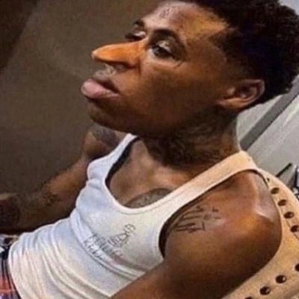

Quandale dingle is the incarnation of dark-skin energy and is a super powerful entity in the memeverse
Qunadale is a certified goofy goober and has over 100 cousins. Quandale's father left to go get milk so his mother raised him all his life. He dislikes his father for leaving him so he swore revenge. He is currently searching for him but to no avail. Quandale also has frequent battles with two other incarnations. The two incarnations of light-skin energy kumulala and savesta. They fight due to their energies clashing since Qunadale is dark energy while they are light energy. Quandale also is a rapper and makes banger after banger and is now rich. Not else is known about Quandale since he is a mystery so thats it about him.
Quandale is a super powerful being capable of destroying xenoverses with his base power level. Quandale in base form is as strong as 100 ultra instinct shaggies and 1 scooby doo. Not only does he have toon force but a strong one at that. Its so strong in fact he has possessed a person in our world. He can bend reality to whatever he desires and wills. His ultimate form super omega ultra goofy Quandale Dingle has enough power to go toe to toe with full power Ohio final boss using WONDER OF OHIO. This feet in itself is enough for a spot in the top 10 of the strongest memeverse entities.
Quandale ranks in the top ten of the memeverse strongest characters. He is a teir 9 memeverse character.